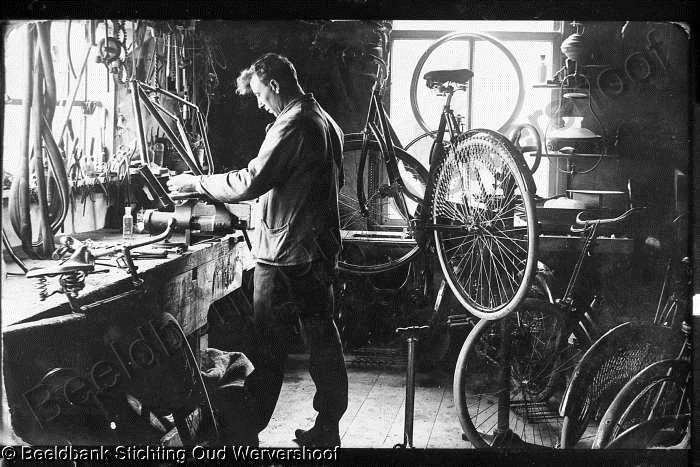

De Fluitende Fietser.
De fluitende fietser is een fietsenwinkel met meerdere jaren ervaring en is gepassioneerd in zijn vakgebied. Als jij een fiets nodig hebt of advies nodig heeft over welke fiets het beste bij uw past wij helpen u graag om de beste fiets te voorzien die aan uw wensen voldoet. Geschiedenis van de fiets. De fiets die we vandaag de dag kennen heeft door de eeuwen heen veel veranderingen mee de eerste fiets is in 1771 verschenen en omdat dit het eerste model is van een fiets had dit ontwerp nog geen trappers. En was een zwaar en onhandig omdat het in die tijd het meeste van hout werd geconstrueerd. Door de jaren heen heeft het beeld van de fiets veel onderhanden genomen en werden er veel verbeteringen aangebracht aan het ontwerp. Verschillende Soorten fietsen. Er zijn veel verschillende soorten fietsen, elk met hun eigen doel. Hier zijn een paar voorbeelden zoals de stadsfietsen , elektrische fietsen, racefiets, hybride fietsen en mountainbikes. Stadsfietsen zijn geschikt voor dagelijks gebruik in de stad, terwijl racefietsen en mountainbikes meer geschikt zijn voor sportieve activiteiten. Hybride fietsen zijn een combinatie van stadsfietsen en racefietsen en zijn geschikt voor zowel dagelijks gebruik als sportieve activiteiten. Elektrische fietsen zijn populair omdat ze het trappen gemakkelijker maken en geschikt zijn voor langere afstanden. Top 3 aanrader van de Fluitende Fietser. De Fluitende Fietser raadt drie verschillende soorten fietsen aan, namelijk de stadsfiets, de hybride fiets en de elektrische fiets. Stadsfietsen zijn ideaal voor dagelijks gebruik in de stad en zijn comfortabel en gemakkelijk te onderhouden. Hybride fietsen zijn geschikt voor zowel dagelijks gebruik als sportieve activiteiten en zijn veelzijdig en comfortabel. Elektrische fietsen zijn ideaal voor langere afstanden en maken het trappen gemakkelijker, vooral bij tegenwind of heuvelachtig terrein. Wij nodigen u uit om onze winkel te bezoeken en ons uitgebreide assortiment fietsen te bekijken. Met vriendelijke groet de medewerkers van de Fluitende Fietser.
